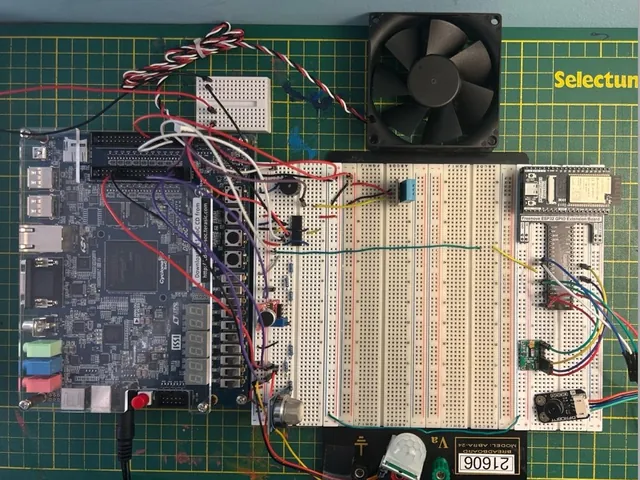

Hardware · FPGA + ESP32
Watch The Baby
Infant monitor built to help prevent SIDS
A monitor for newborns up to one month old. Six sensors track heart rate and SpO₂, body temperature, room temperature and humidity, motion, crying, and gas or smoke.
The DE1-SoC FPGA handles real-time sensor processing and talks to an ESP32 over UART. The ESP32 reads the biometric sensors and uploads to Firebase, and the caregiver's phone app raises an alert when a reading goes out of range.
PartsDHT11, KY-037, HC-SR501, MQ-2, MAX30102, MLX90614, fan, buzzer
Source on GitHub
Data path
6 sensors
DE1-SoCVHDL
UART
ESP32firmware
Wi-Fi
Firebasecloud
Phone appExpo